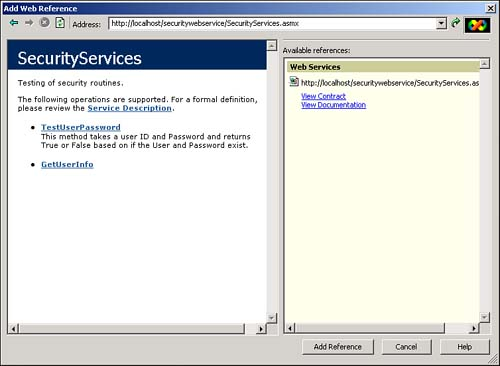
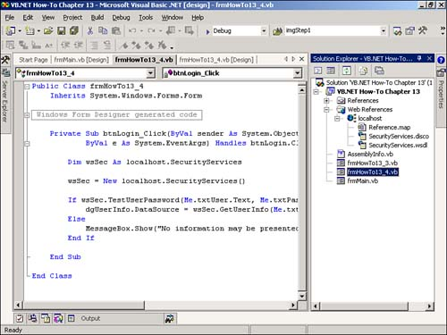
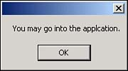

Note
You can see two methods for this Web Service: TestUserPassword and GetUserInfo. The second method is discussed in How-To 13.4. |
I have created this Web Service that takes the username and password and returns True or False based on whether the username and password check out. I have even tested the Web Service to make sure it works correctly. How do I use, or consume, this Web Service in another application?
To use a Web Service, you need to create a reference to it.
To set up a Web reference, you choose Add Web Reference from the Project menu. You are then presented with the Add Web Reference dialog box, which allows you to browse for Web Services using the Universal Description Discovery Integration (UDDI) directories, as described in the beginning of the chapter. However, you will be able to browse to the Web Service you created and supply the name of the full URL using localhost to the name of the .asmx file you created, in this case:
http://localhost/securitywebservice/SecurityServices.asmx
After you have specified this, you will see the methods appear for your Web Service (see Figure 13.11.)

Note
You can see two methods for this Web Service: TestUserPassword and GetUserInfo. The second method is discussed in How-To 13.4. |
After you have clicked Add Reference to accept the new reference, you can use the methods in your application. You can double-check that the reference is there by looking for it under the Web Reference node that appears in the Solution Explorer (see Figure 13.12.)

After you have created the reference to the Web Service, you will create a reference within your application, much like you would to other object models. Following is a snippet of code that performs this very task:
Dim wsSec As localhost.SecurityServices wsSec = New localhost.SecurityServices() If wsSec.TestUserPassword(Me.txtUser.Text, Me.txtPassword.Text) Then
As you can see, the method TestUserPassword is called just as another other method or function is called.
To preview this How-To, open the solution called Visual Basic .NET-Chapter 13, located in the chapter folder.
Note
You will probably have to re-establish the Web reference for the Web Service that is used for this example. Locate where you have installed SecurityWebServices and set the reference. |
When you run the project, the first form that comes up is the main switchboard with each of the How-Tos listed for this chapter. Click on How-To 13.3. The form for How-To 13.3 opens.
If you type FSBarker for the User and Test for the Password, you get a message box telling you that you can continue into the application (see Figure 13.13).
Create a new Visual Studio .NET project using the Windows Application project template. Create a Windows Form, and place the controls shown in Table 13.1 in the order displayed in Figure 13.13.
|
Object |
Property |
Setting |
|---|---|---|
|
Label |
Text |
User |
|
TextBox |
Name |
txtUser |
|
Label |
Text |
Password |
|
TextBox |
Name |
txtPassword |
|
Button |
Name |
btnLogin |
As described in the "Technique" section, set a reference to the Web Service you created in the previous How-To. Remember to point to the *.asmx file created in the Web Service. Choose Add Web Reference from the Project menu.
Add the code listed in Listing 13.3 to the Click event of btnLogin by double-clicking on the button. This routine instantiates an instance of the Web Service. Then, using the wsSec object, the routine calls the TestUserPassword method. This method is passed the username and password that were entered.
Private Sub btnLogin_Click(ByVal sender As System.Object,
ByVal e As System.EventArgs) Handles btnLogin.Click
Dim wsSec As localhost.SecurityServices
wsSec = New localhost.SecurityServices()
If wsSec.TestUserPassword(Me.txtUser.Text, Me.txtPassword.Text) Then
MessageBox.Show("You may go into the applcation.")
Else
MessageBox.Show("You may not go into the application.")
End If
End Sub

Note that passing parameters and using the return value is just like using methods from other objects or even functions from your own applications.